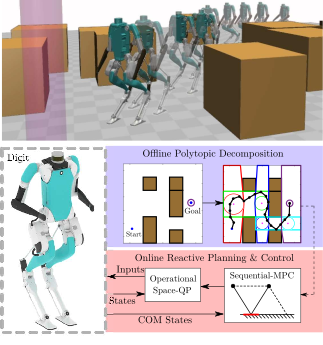
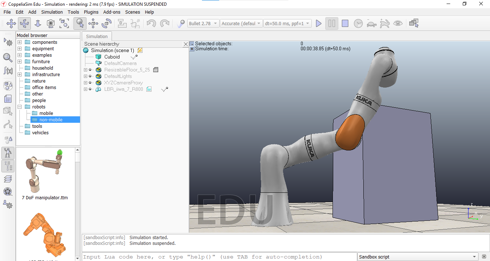

|
I am a Master of Science in Robotics student at Robotic Locomotion Lab, Department of Mechanical Engineering, University of Delaware, where I am working on control and dynamics of legged robots under the guidance of Dr. Ioannis Poulakakis. In the past, I have worked at Space Application Center - ISRO as a Robotics Project Intern on formulating a control system and a closed form solution for the inverse kinematics of a Walk-And-Roll Rover leg. I grew up in Porbandar, India, a small coastal town in the state of Gujarat. Since then, I've lived in Jinja (Uganda), Ahmedabad (Gujarat), and now living in Newark (Delaware). The things that I am very passionate about are Street Photography and Rock music. |

|
|
|

Kunal Sanjay Narkhede, Abhijeet Mangesh Kulkarni, Dhruv Ashwinkumar Thanki, and Ioannis Poulakakis
[Published in IEEE Robotics and Automation Letters]
[DOI]
[arxiv]
[Video]
|
I'm interested in the control of Hybrid Dynamical Systems, Reinforcement Learning, Optimization; anything and everything that piques my interest. (open the following videos in a new tab) |
|
2021 Optimising trajectories for strainght Ahead motion for Digit robot. |

|
2019 (5Link, 3Link) An article explaining what a HZD based controller is and how it can be used to drive a resultant reduced order system via feedback using the concept of virtual constraints. A Simulation of 5-Link biped robot is used as an example. |
|  |
2020 (Github) An article explaining what a HZD based controller is and how it can be used to drive a resultant reduced order system via feedback using the concept of virtual constraints. |